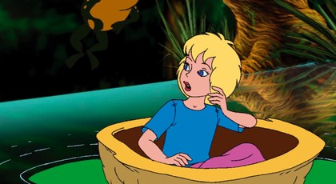

Parmak Kız

Bir zamanlar, çocuklara çok düşkün bir kadın varmış. Çocukları bu kadar çok sevdiği halde, bir türlü çocuğu olmuyormuş.
Bir gün, ihtiyar bir büyücüye gidip:
- Ben, küçük bir çocuk sahibi olmak istiyorum. Böyle bir çocuğum olup olmayacağını söyler misin? Demiş.
Büyücü:
- Buna üzülme, çaresi var. Al sana bir arpa tanesi. Bu arpayı, ne köylü tarlasına eker, ne de tavuklar yer. Verdiğim arpayı evinde bir saksıya ek,
sonra da bekle, ne olacağını görürsün.
Kadın teşekkür ederek, büyücünün bu iyiliği karşısında, ona biraz para vermiş. Sonra, doğruca evine giderek, arpa tanesini saksıya ekmiş.
Sabırla saksının başında beklemeye başlamış. Çok geçmeden saksıda, laleye benzeyen, iri bir çiçek açmış. Lalenin taç yaprakları, sanki olgunlaşmamış gibi sımsıkı kapalı duruyormuş.
Saksıdaki bu çiçeği, hayran hayran seyreden kadın, dayanamayıp öpüp koklamaya başlamış. O an içinden, ne güzel çiçek diye düşünmüş.
Kadın böyle düşünür düşünmez, aniden çiçeğin . yaprakları açılıvermiş. Bu, kadının hayatında gördüğü en güzel ve büyük laleymiş.
Lalenin çanağının bir köşesine büzülüp oturmuş parmak boyunda bir çocuk varmış. Çocuğu görür görmez, kadın hemen adını “Parmak kız” koymuş.
Kadın, Parmak Kız’ın beşiğini cilalı ceviz kabuğundan, yatağını menekşe yaprağından, yorganını da gül yaprağından yapmış.
Parmak kız, yeni hayatına kolayca alışmış. Geceleri kendinse yapılan yatakta uyur, gündüzleri masanın üstünde oynarmış. Kadın, masanın üzerine içi su dolu,
etrafında çiçek süsleri olan tabağını koyarmış. Parmak kız da suya bir lale yaprağı atarak üstüne oturur, iki beyaz at kılını, kürek gibi kullanıp
tabağın bir başından bir başına geçermiş. Onun bu hali, göze o kadar hoş görünürmüş ki, seyrine doyum olmazmış. Üstelik, parmak kız o kadar içten,
o kadar güzel şarkı söylermiş ki, böylesi, bugüne kadar ne duyulmuş, ne de işitilmiş…
Bir gece Parmak Kız mışıl mışıl beşiğinde uyurken, pencerenin kırığından içeriye çirkin bir kurbağa girmiş. Bu patlak gözlü çirkin hayvan,
küçük kızın uyuduğu masaya sıçramış. Küçük kızın yorganın altında mışıl mışıl uyuduğunu görünce:
- Ne kadar güzel bir kız, oğluma çok güzel bir eş olur, diyerek, Parmak Kız’ın uyuduğu ceviz kabuğundan beşiği kaptığı gibi, girdiği yerden bahçeye çıkmış.
Evin yakınında, bataklık bir arsanın yanında geniş bir dere akmaktaymış. Çirkin kurbağa ile oğlunun evleri, bu bataklıktaymış.
Çirkin kurbağanın oğlu da kendisi gibi pis ve çirkinmiş. Babasının getirdiği ceviz kabuğundaki küçük güzel kızı görünce, “Viraaaak… Viraaaak….” Diye bir çığlık atmış.
Baba kurbağa:
- Çok yüksek sesle konuşuyorsun, şimdi uyandıracaksın. Kuğu tüyü gibi hafif, uyanırsa korkudan uçup gidiverir sonra, demiş.
Baba ile oğul kurbağa, Parmak Kız’a kalacak bir yer yapmaya karar vermişler. Bu arada baba kurbağanın aklına çok güzel bir fikir gelmiş:
- Derede yetişen nilüfer yapraklarından birisinin içine oturtalım. Orada bir adadaymış gibi olur ve kaçamaz. Bu arada
biz de, bataklığın dibindeki büyük odayı güzelce derler, toplarız. Sizin yatak odanız olur, diyerek düşüncesini açıklamış.
Derenin ortasında gerçekten de, suyun üstünde açılmış nilüferler ile yeşil yassı yaprakların yüzdüğü görülmekteymiş. Uzaklarda çok iri bir yaprak varmış.
Baba kurbağa, Parmak Kız’ı alarak o yaprağa doğru gitmiş. Parmak kız’ı, ceviz . kabuğundan beşiği ile birlikte oraya bırakmış.
Sabah güneşin ilk ışıklarıyla birlikte Parmak Kız da uyanmış. Önce nerede olduğunu anlayamamış. Zavallı Parmak Kız , bir an sonra nerede,
nasıl bir yerde olduğunu görmüş. Üstünde durduğu koca yaprağın etrafının su ile çevrili olduğunu anlayıp da yere inemeyeceğini düşününce ağlamaya başlamış.
O anda ihtiyar kurbağa da, bataklığın dibindeki odayı oğlu ile Parmak Kız’a hazırlamak için uğraşıyor, renkleri sararmış su bitkilerinin yapraklarıyla
süpürüyormuş. Amacı, güzel geline layık bir oda hazırlamakmış. İşini bitirdikten sonra çirkin oğluyla beraber oda hazırlamakmış. İşini bitirdikten sonra
çirkin oğluyla beraber küçük kızın yatağını alıp, gelin odasını hazırlamak için işe koyulmuşlar.
Baba kurbağa ve oğlu, Parmak Kız’ı almak için yanına gittiklerinde, suya dalıp çıkmışlar. Baba kurbağa:
- Güzel kız, işte kocan olacak oğlum bu. Bataklığın dibinde size eşsiz bir ev hazırlıyorum, demiş.
Çirkin oğlanın ağzından, “Vıraaak, vıraaak” diye sürekli aynı ses çıkıyormuş. Baba ile oğul, kızın yattığı ceviz kabuğundan, zarif yatağı almış,
kızın yatağın üzerinde yalnız bırakıp, yüzerek evlerine dönmüşler. Parmak Kız, baba kurbağa kadar çirkin bir yaratığın yanında oturacağını,
bir de onun oğluna eş olacağını düşündükçe, gözünden seller gibi yaşlar akıyormuş. O sırada derede yüzen kırmızı balıklar, ihtiyar kurbağanın söylediklerini duymuş,
Parmak kız’ı görür görmez o kadar güzel bulmuşlar ki, çirkin bir bataklık kurbağasının bu kadar güzel bir kızı alıp, onu üzmesine gönülleri razı olmamış.
Hep beraber, kızı kurtarmak için çalışmaya başlamışlar. Önce, kızın üzerinde oturduğu yaprağın etrafına toplanıp, iyice dişleyerek yaprağı koparmışlar.
Böylece serbest kalan yaprak, akıntıya kapılarak çirkin . baba oğul kurbağalarının yetişemeyecekleri kadar uzaklara sürüklenmiş.
Parmak kız, bu şekilde yeşil yaprağın üzerinde yol alırken, onu gören kuşlar:
Oh! Ne kadar güzel ve nazlı kız! Diye öterek, hayranlıklarını gizleyemiyorlarmış. Akıntı ile durmadan yol alan Parmak Kız, çok geçmeden ülkesinin sınırlarını geçmiş.
Bu yolculuk esnasında, Parmak Kız’a güzel bir beyaz kelebek arkadaşlık etmiş. O da yaprağın üzerine konmuş, yanındaki beyaz kelebekle birlikte
üstelik kurbağaların kendisine yetişemeyeceklerinden dolayı Parmak Kız çok mutluymuş. Sular güneşin gönderdiği ışınlarla saf altınlar gibi parıldıyor,
Parmak Kız bu güzellikleri seyretmeye doyamıyormuş. Daha hızlı yol alabilmek için, kemerinin bir ucunu kelebeğe, bir ucunu da yaprağa bağlamış.
Kelebeğin gücüyle şimdi daha hızlı yol alıyorlarmış. Onlar, bu şekilde son hızla yol alırken, oradan geçmekte olan büyükçe bir mayıs böceği,
Parmak Kız’ı görmüş. Küçük vücudunu ayakları ile sararak, birlikte uçup bir ağaca konmuş. Yeşil yapraklar ise, kelebekle birlikte akıntıya kapılıp gitmiş.
Bir anda kendisini küçük vir ağacın üzerinde bulan Parmak Kız, büyük bir korkuya kapılmış. Fakat onu en fazla üzen, beyaz kelebek olmuş. Çünkü, küçük,
beyaz kelebeği, kemeri ile yaprağa bağlamıştı. Kelebek bu yüzden, açlıktan ölebilir, sulara boğulabilirdi.
Mayıs böceği ise Parmak Kız2ın derdini sormak şöyle dursun, onu ağacın en iri yaprağına oturttuktan sonra, ağaçtaki çiçek suları ile karnını
doyurup başının çaresine bakmasını söylemiş. Sonra da Parmak Kız ‘ın gönlünü almak için:
- Her ne kadar mayıs böcekleri gibi güzel değilsen de, pek çirkin de sayılmazsın, demiş.
O ağaçta oturan diğer mayıs böcekleri biraz sonra, Parmak Kız’ı görmek için misafirliğe gelmişler. Dişi mayıs böcekleri, Parmak Kız’a yüksekten bakıp küçümseyen bir sesle:
- Ne kadar gülünç bir yaratık, yalnızca iki bacağı var, diyerek gülmeye başlamışlar.
Diğer mayıs böcekleri konuşmayı sürdürmüşler:
- Ne kadar da cılız öyle, kanatları bile yok.
Deha başkaları:
- Ay, ne kadar çirkin, yüzüne bakılır gibi değil, demişler.
Hepimiz biliyoruz ki, Parmak Kız, onların söyledikleri gibi çirkin değil, aksine seyrine doyum olacak kadar güzelmiş. Onu kaçıran ve ilk bakışta güzel
bulan mayıs böceği de diğerlerinin söylediklerine inanmaya başlamış. Bu nedenle Parmak Kız’ı daha fazla yanında alıkoymak istememiş. Parmak Kıza, gönlünün dilediği yere girmekte serbest olduğunu söylemiş.
Mayıs böcekleri, onu alıp bir papatyaya oturtmuşlar. Çok güzel olduğu halde, kendisini çirkin bulan mayıs böceklerine içerleyen Parmak Kız, ağlamaya başlamış.
Parmak Kız, o yaz tek başına yaşamış. Açlığını ve susuzluğunun çiçeklerin öz sularını . içerek gidermeye çalışmış.
Parmak kız, yaz ve sonbahar mevsimlerini böyle geçirmiş. Kış olunca, ona şarkıları eşlik eden kuşlar bile bir bir gitmeye, ağaçlar yapraklarını dökmeye başlamış.
Altında barındığı yapraklar bile sararıp kurumuşlar.
Parmak Kız’ın giysileri de zamanla eskiyip lime lime olduğundan, soğuktan etkileniyormuş. Kış mevsimi iyice . bastırınca, lapa lapa kar yağmaya başlamış.
Her kar tanesi onun ufacık vücudunu bir kürek toprak gibi örtüyormuş. Üşümemek için kuru yapraklara sarınmış ama, yapraklar onu battaniye gibi ısıtamadığından
tir tir titriyormuş.
Parmak Kız’ın sığındığı ormanın yakınında sürülmüş, büyükçe bir tarla varmış. Tarlanın üzeri samanla örtülüymüş. Parmak Kız oraya gidebilmek için, ormanı
bir baştan bir başa katetmek zorundaymış. Tüm gücünü sarf etmiş ve son bir gayretle tarlaya ulaşmış. Samanların altında bir tarla faresinin yuvasını bulmayı başarmış.
Tarla faresinin yuvası tıka basa yiyeceklerle dolu, dayalı döşeli yatak odası, mutfağı ve kileri ile çok rahat bir yuvaymış. Farenin de keyfi pek yerindeymiş.
Açlıktan ve soğuktan ölmek üzere olan Parmak Kız, bir lokma yiyecek bulma umidiyle, evin kapısını bir dilenci gibi çalıp, bir arpa tanesi rica etmiş.
Bu yuvada yaşayan dişi tarla faresi, aslında çok iyi yürekliymiş. Dilenci olmadığını anladığından, Parmak Kız’a:
- İçeriye gir bakalım, sıcacık bir odam ve pek çok yiyeceğim var. Benimle birlikte karnını doyurursun, diyerek onu yuvasına davet etmiş.
Parmak Kız’ı çok beğendiği için ona şu teklifte bulunmuş:
- Benimle burada kışı geçirebilirsin. Yalnız, bazı şartlarım var. Burada yaşadığın sürece odanı temiz tutacaksın. Ben masal dinlemeye bayılırım.
Bana her gün . bir masal anlatacaksın..
Parmak Kız, bu teklifi ve şartları memnuniyetle kabul etmiş. Aradan birkaç gün geçtikten sonra tarla faresi, Parmak Kız’a şunları söylemiş:
- Bugün konuğumuz gelecek. Komşum, haftada bir defa gelmeyi adet edinmiştir. Onun hali vakti benden daha iyidir. Evi çok geniş ve salonu mobilyalıdır.
Üstelik, sırtında siyah kadife kürkü var. Eğer onun yanına gidebilsen çok rahat edersin ama, o burnunun ucunu bile göremez. Bildiğin en güzel masalları anlatıp,
onu ömür boyu oyalaman gerekecek.
Tarla faresinin komşum dediği köstebekten başkası değilmiş. Parmak Kız, böyle birisinin yanında yaşamaya hiç de niyetli değilmiş.
Biraz sonra, sırtında kadife kürkü ile köstebek, faresinin anlattığına bakılırsa, çok zenginmiş. Evi, tarla faresinin yirmi katı kadarmış. Köstebek,
Çiçekleri ve güneşi hiç görmemiş ama, yine de seviyormuş.
Parmak Kız, evlerine gelen konuğu ağırlamak için şarkı söylemeye başlamış. Parmak Kız’ın söylediği şarkılar “uç böceğim uç” ile “Papaz tarlaya gelince” imiş.
Parmak Kız’ın sesini ve şarkılarını çok beğenen köstebek, şefkatle kızın üzerine doğru atılmış. Fakat, Parmak Kız çok sessiz olduğundan ağzını açıp bir şey söylememiş.
Köstebek, biraz önce kendi evi ile fareninki arasında bir yer altı koridoru yaparak buraya geldiğini anlatmış. Komşusu fareye ve yabancı
kıza isterlerse orada gezinebileceklerini söylemiş. “Tabii geçitteki bir kuş ölüsüne aldırmazsanız.” Diye de eklemiş. Koridordaki kuş öleli aslında çok olmamıştı. Buraya da, köstebek koridoru kazdığı sıralarda düşmüş olmalıydı.
Köstebek, dişlerinin arasına, karanlıkta parlayan ve etrafa ışık saçarak aydınlatan bir çöp alır koridor boyunca hanımlara yol göstermiş. .
Koridora ölü kuşun yanına yaklaştığında, toprağı burnuyla eşeleyerek ışığın aydınlatabileceği bir delik açmış. İşte o zaman, yerde yatan bir kırlangıç görmüşler.
Kanatları yanına düşmüş, başı ve ayakları tüylerinin arasına sokulmuş, zavallıcık herhalde soğuktan ölmüştü…
Ormanda etrafında uçuşup cıvıl cıvıl ötüşen kuşlara karşı, gönlünde sonsuz bir sevgi bulunan Parmak Kız , gördüğü bu manzara karşısında çok üzülmüş. Fakat köstebek,
kırlangıcı ayağı ile iterek:
- Artık ötmüyor. Dünyada kuş doğmak gibi bir felaket var mı? Allah’a çok şükür çocuklarımdan hiçbirinin başına böyle bir dert gelmedi. Varı yoğu ötüşünden
ibaret bir kuş tez zamanda yoksulluğa düşer, kış gelince de ölür demiş.
Tarla faresi:
- Evet komşucuğum, pek akıllıca konuştunuz. “Kiviit” diye ötmek neye yarar? Ancak yoksulluk içinde ölmek için birebirdir. Gene de öttükleri için tavus kuşu
gibi kurulanlar bile var, demiş.
Parmak Kız, bu konuşmalara katılmamış. Ama sırtları kuşa doğru döndüğünde, kırlangıcın başındaki . tüyleri kaldırıp bir öpücük kondurmuş. İçinden de:
“Belki bu da, yaz aylarında benim için neşeli neşeli ötenlerden biridir. Şayet öyleyse ona ne sevinçler, ne mutluluklar borçluyum.” Demiş.
Köstebek, ışığın girmesi için açtığı deliği tıkadıktan sonra, hanımları evlerine kadar uğurlamış. Fakat, gece Parmak Kız uyuyamamış. Kalkmış,
saman çöplerinden bir hasır örmüş ve koridora gidip kırlangıcın üzerine örtmüş. Toprağın soğuğundan koruyabilmek için de ayrıca, farenin evinde bulduğu pamuklarla iyice sarmış:
- Allah’a ısmarladık, şirin küçük kuşcağız. Ağaçlar yaprakla örtülüyken, güneş bizi ısıtırken, yaz boyunca neşeli şarkılarını dinledim, demiş.
Sonra da başını kuşun göğsüne dayamış. Fakat, korku ile doğrulması bir olmuş.
Çok heyecanlanan Parmak Kız, önce ürkmüş. Kendisi, bir baş parmak büyüklüğünde olduğundan, kuş yanında dev gibi duruyormuş. Yine de gayretle
kırlangıcın iki yanındaki pamukları iyice sarmış, yorgan olarak kullandığı nane yaprağını da getirip kırlangıcın başına koymuş.
Ertesi gece, Parmak kız sürünerek kırlangıca bakmaya gitmiş ve onu hayatta bulmuş. Zavallı kırlangıç çok bitkin ve hasta olduğundan, küçük kıza bakmak
için gözlerini zorlukla aralayabilmiş.
Koridor çok karanlık olduğu için Parmak Kız, elinde ışıltılı bir çöp tutmaktaymış.
Hasta kırlangıç:
- Sana nasıl teşekkür edeceğimi bilemiyorum, küçüğüm. Beni öyle ısıttın . ki, yakında hiçbir eyim kalmayacak. Tamamen iyileştiğim zaman ben de güneşi
çok olan ülkelere gideceğim demiş.
Parmak Kız , kırlangıcın başını okşamış ve:
- Dışarısı çok soğuk… O kadar çok kar var ki.. Her taraf buz tutmuş. Sıcacık yatağında yatıp bir an önce iyileşmelisin. Senin için elimden geleni yapacağım, demiş.
Parmak Kız bunları söyledikten sonra, çiçek yaprağıyla su getirip kırlangıca içirmiş. Sonra da onun kanadını bir çalıya çarparak nasıl yaralandığını dinlemiş.
Bu nedenle kırlangıç, arkadaşları kadar hızlı uçamamış. O , sıcak ülkelere doğru zaman kaybetmeden yollarına devam ederlerken o, daha fazla dayanamamış, yorgunluktan ve halsizlikten yere düşmüş. Kendinden geçmiş. Nasıl olup da buralara geldiğini hatırlayamıyormuş.
Zavallı kırlangıç, bütün kış mevsimini orada geçirmiş. Parmak Kız, tarla faresi ile köstebeğe sezdirmeden kırlangıca yardım ediyormuş. Çünkü onların,
birtakım nedenlerle bu yardımları engellemelerinden korkuyormuş.
Yavaş yavaş güneş toprağı ısıtmaya, ilkbahar tüm güzelliğiyle kendini göstermeye başlamış. Kırlangıç, artık Parmak Kız’a veda etme zamanın geldiğini biliyormuş.
Ondan, köstebeğin açıp kapattığı deliği yeniden açmasını istemiş. Sırtına binip, yakındaki ormana gelip gelmeyeceğini sormuş. Ordan ayrılmasının arkadaşı tarla
faresini çok üzeceğini bilen Parmak Kız:
- Seninle gelebilmeyi çok isterdim, fakat olmaz, diye cevap vermiş.
Kırlangıç, . güneşli yerlere doğru uçarken:
- O halde, hoşça kal benim nazlı, küçük çocuğum. Senin yaptıklarını asla unutmayacağım. Allaha ısmarladık! Demiş.
Parmak Kız, gözleri yaşlarla dolu, kırlangıcın gidişini izliyormuş. Bu ayrılığa nasıl dayanacağını düşünmeye başlamış. Çünkü, kırlangıca yürekten bağlanmış.
Kırlangıç son bir defa: “Kiviit! Kiviiit!” diye öterek gözden kaybolmuş.
Parmak Kız’ın derdi, yaz mevsimin gelmesiyle birlikte artmaya başlamış. Güneşe çıkıp ısınması imkansızlaşmış. Tarla faresinin evinin üzerindeki buğdaylar
büyümüş, parmak boyundaki bir kız için, geçilmesi zor bir orman haline gelmiş.
Tarla faresi:
- Artık yaz geldi. O can sıkıcı, kadife kürklü köstebek, mutlaka seninle evlenmek istediğine göre, çeyizini hazırlamalısın. Sonra en güzel çeyizler gerek.
Köstebek karısının hemen hemen hiç eksiği olmamalı.
Tarla faresi, bu amaçla dört çıkrık kiralamış. Parmak Kız iplik eğiriyor, gece gündüz demeden çalışıyormuş. Durmaksızın kumaş dokusunlar diye gündelikle
dört tane örümcek tutmuş. Köstebek, hemen (bilgi yelpazesi.net) her akşam misafirliğe geldikçe, toprağı ısıtıp, dayanılmaz hale getiren güneşi kötülemekteymiş.
Bu yüzden düğün mevsim sonuna kalmış. Hele düğün günü gele dursun. Parmak Kız her gün, güneşin doğuşu ve batışında kapıya çıkıp, rüzgarda sallanan buğday
başaklarının arasından, gökyüzünün mavisini, doğanın güzelliklerini seyredip, sevgili kırlangıcını düşünüyormuş. Fakat kırlangıç, uzaklara gittiğinden belki
hiç dönmeyeceğini düşünerek . üzülüyormuş.
Sonbahar yaklaşırken, Parmak Kız’ın çeyizi tamamlanmış.
İhtiyar fare:
- dört hafta sonra düğün yapılacak, demiş.
Fakat, Parmak Kız ağlayarak, çirkin köstebekle evlenmek istemediğini söylemiş.
Fare:
- Yoo… Yoo… İnatçılık yok, rica ediyorum senden. Yoksa beyaz dişlerimin tadını . tadarsın haa… Üstelik, böyle yakışıklı bir erkekle evlendiğin için ne
mutlu sana. Kürkün böylesi krallarda bile yoktur. Mutfağı, kileri tıklım tıklım dolu. Karşına böyle kısmet çıktığı için sevinmelisin, demiş.
Düğün günü gelip çatmış. Köstebek, Parmak kız’ı toprağın çok derinliklerindeki evine götürmek üzere gelmiş. Köstebek güneşi sevmediği için,
artık o da bir daha güneşin parlak ışıklarının girmeyeceğini düşünüyormuş. Tarla faresinin evinde hiç olmazsa, gidip kapıdan dışarıya bakabiliyormuş.
Parmak Kız, küçük kollarını kaldırarak:
- Allah’a ısmarladık güneş! Allah’a ısmarladık. Senin ışıklarının girmediği bu iç karartıcı yerde yaşamaya mahkumum artık ben, diye seslenmiş.
Tarladaki buğdaylar . biçilmiş, yerde yalnızca samanlar klamış. Bu nedenle, Parmak Kız farenin evinin önünde birkaç adım ilerlemiş. Kırmızı bir çiçeği
elini değdirmiş. Ona dönerek:
- Allah’a ısmarladık. Eğer, benim kırlangıç dostumu görürsen, selamımı söyle, demiş.
Tam içeriye gireceği anda, başının üzerinde, “ Kiviiit!.. Kiviiit!” diye bir ses duymuş. Başını kaldırıp da baktığında, çok sevdiği kırlangıcını görmüş.
Kırlangıç da kızı gördüğü için çok sevinçliymiş. Parmak Kız, kırlangıca, köstebekle zorla evlendirileceğini, güneş girmeyen bir yer altı evinde oturmaya
mahkum olacağını anlatmış. Bunları anlatırken de gözlerinden yağmur gibi yaşlar dökülüyormuş.
Tüm bunları dinleyen kırlangıç:
- Artık kış . yaklaşıyor. Sıcak ülkelere gitmeye hazırlanıyoruz. Birlikte gelmek ister misin? Seni bir kuşakla sırtıma iyice bağlarım. Birbirimizden hiç ayrılmayız.
Uzaklara, çirkin köstebekle güneş girmeyen karanlık evinden çok uzaklara kaçarız. Böylece güneşin her gün görüldüğü, göz kamaştırıcı çiçeklerin açtığı
sıcak ülkelere varmak için birlikte dağlar aşarız, gel, ne olursun. Seni bu halde . bırakamam. Ben yerde yarı donmuş, baygın yatarken beni ölümden kurtardın,
sevgili küçük, benimle gel.
Parmak Kız:
- Seninle elbette gelirim, demiş:
En sağlam tüylerden birine kuşağına bağlamış. Böylece kırlangıçla Parmak Kız ormanların, denizlerin, karla örtülü dağların üzerinden uçup gitmişler.
Böyle rüzgara ve soğuğa alışkın olmayan Parmak Kız, kırlangıcın tüyleri arasına iyice büzülmüş. Yalnızca aşağıdaki seyrine doyum olmaz güzellikleri
seyredebilmek amacıyla başını çıkartıyormuş.
Sonra iki dost, sıcak ülkelere gelmişler. Buralar öyle güzel yerlermiş ki, sanki güneşi daha parlak, gökyüzü pırıl pırılmış. Bahçelerde, bağ ve kayalıklarda sarılı,
kırmızı güzel asmalar kendiliğinden yetişiyor, ormandaki ağaçlardan limonlar, elmalar sarkıyormuş. Belki de dünyanın en güzel çocukları yollarda,
kırlarda binbir renkli kelebeklerle oynuyorlarmış.
Kırlangıç yol aldıkça, gördüğü bu güzelliklere, yeni güzellikler ekleniyormuş. Etrafı yemyeşil ağaçlarla çevrili, mavi bir bir gölün ortasında,
bembeyaz mermerden bir saray görünmüş. Bu sarayın uzun sutünlarına asmalar sarılmış. İşte bu sutünların tepesinde birçok kırlangıç yuvası varmış.
Tabii Parmak Kız2ı taşıyan kırlangıcındaki de oradaymış.
Kırlangıç:
- İşte evime geldik. Ama birlikte kalmamız yakışık almaz. Zaten seni ağırlamak durumunda değilim. Sen en güzel çiçeklerden birini seç. Seni orada
rahat ettirebilmek için elimden geleni yapmaya çalışacağım, demiş.
Parmak Kız . ellerini çırparak:
- Çok güzel ne mutlu bana! Diye cevap vermiş.
Aşağıda, büyük bir mermer sütun üçe bölünmüş halde, yere uzanıyormuş. Aralarında çok güzel çiçekler varmış. Kırlangıç, Parmak Kız’ı yaprakların
birisinin üzerine oturtmuş. Bu güzellikler içinde Parmak Kız çok mutluymuş.
Yaprağında oturduğu çiçeğin içine baktığında, birden haryretler içinde kalakalmış. Çiçeğin içinde cam gibi pırıl pırıl, bembeyaz ve küçük bir
adam oturuyormuş. Adamın boyu bir parmak kadarmış. Omuzlarında parlak kanatları, başında ise altın tacı varmış. Bu görkemli adam, o çiçeğin perisiymiş.
Oradaki her çiçek, bir küçük erkekle kadına saray olmuş. kendisi de tüm bu ulusa hükmediyormuş.
Parmak Kız, kırlangıcın kulağına eğilerek:
- Aman, ne güzel, demiş.
Koskoca, dev gibi kırlangıcı görünce, çiçekler kralı biraz korkmuş. Fakat yanındaki kıza gözü ilişince, hem korkudan sıyrılmış, hem de çok sevinmiş.
Hayatında bu kadar güzel bir kıza ilk kez rastlıyormuş. Önce ismini sormuş. Sonra da başındaki tacı çıkararak, Parmak Kız’ın başına koymuş. Ardından da
kendisiyle evlenmek istediğini söylemiş. Razı olursa, tüm çiçeklerin kraliçesi olacağını da sözlerine eklemeyi ihmal etmemiş.
Karşısına çıkan bu şansın, ne kurbağanın oğluna, ne de siyah kadife kürklü köstebeğe benzediğini düşünen Parmak Kız, “Evet!” demekte, teredüt etmemiş.
Kral ve kraliçeye armağanlar vermek üzere, her çiçekten erkekli kadınlı seçkin bir kalabalık ortaya çıkmış. Verilen armağanların içinde, omzuna iliştirilen
ve çiçekten uçmasına yarayan bir çift kanat kadar hoşuna giden olmamış.
Parmak Kız böyle ağırlanıyor, kırlangıç da yuvasında olabildiğine hüzünlü ötüyormuş. Çünkü Parmak Kız’ı çok sevmiş ve ondan hiçbir . zaman ayrılmak istemiyormuş.
İşte bu nedenle çok üzgünmüş.
Çiçekler kralı, Parmak Kız’a
- Bundan sonra senin adın Parmak Kız olmasın. Senin gibi güzel bir kıza yakışmayan, çirkin bir ad bu. Bugünden sonra biz sana Maia diyeceğiz, demiş.
Kırlangıç, üzüntü içinde uzaklara doğru uçarken:
- Allah’a ısmarladık! Allah’a ısmarladık! Diyormuş.
Kırlangıç, gittiği ülkede, Parmak Kız’ın masalını yazan yazarın penceresinin üstündeki yuvasına yerleşmiş. Yazarda dört gözle onun dönüşünü bekliyormuş.
Kırlangıç, “Kiviiit!.. Kiviiit!” diyerek ona olan biteni anlatmış. Yazar, bu serüveni böylece öğrenmiş ve çocuklar okusun diye yazmış.